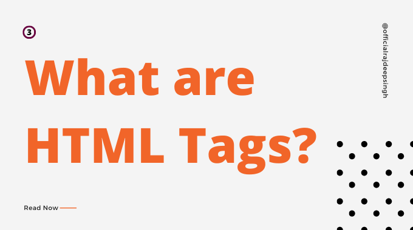

Basic Tag HTML

1. Tag Dasar Struktur HTML
Script mendasar untuk membangun halaman web adalah HTML. HTML merupakan bahasa penanda (markup) pada dokumen teks. Penandaan (markup) dalam HTML menggunakan ‘ < ‘ tanda lebih kecil dan ‘ > ‘ tanda lebih besar, perintah dalam HTML disebut dengan tagTag atau perintah dalam HTML menggunakan perintah yang berpasangan, ditandai dengan <..> dan diakhiri . Bentuk umum penulisan Tag diawali dan bentuk umum tag diakhiri . Bentuk tag dalam HTML terdiri dari beberapa macam, yaitu :
a. Tag berpasangan
b. Tag tunggal
c. Tag dengan attribut
HEAD
Head merupakan bagian awal dari struktur HTML. Penggunaan Head bersifat optional dalam HTML, namun penggunaan Head yang benar dapat meningkatkan kinerja dokumen HTML Selain berisi title atau judul dokumen pada head terdapat perintah lain yang tidak ditampilkan dihalaman browser
Meta Tag
Pada dokumen standar HTML pada konsorsium World Wide Web terdapat
beberapa meta tag, namun meta tag yang sering digunakan oleh search engine
atau mesin pencari diantaranya meta description, meta keyword dan meta robots.
Meta description akan memberikan ilustrasi secara keseluruhan terkait konten
dari halaman web. Maksimal panjang teks direkomendasikan tidak melebihi dari
200 karakter, sebaiknya kalimat yang merupakan deskripsi ditetakkan pada awal
halaman web.
BODY
Bagian body digunakan untuk menyimpan informasi atau data yang akan dipublish pada halaman browser atau web page.
(sumber modul pertemuan 2 tentang basic tag HTML)
Kembali Ke menu Utama